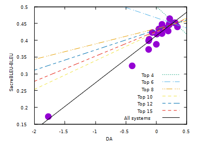
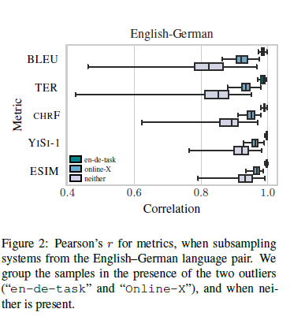

Tangled up in BLEU
How can we evaluate how good a machine generated translation is? We could get bilingual readers to score the translation, and average their scores. However this is expensive and time consuming. This means evaluation becomes a bottleneck for experimentation If we need hours of human time to evaluate an experiment this becomes a bottleneck for experimentation.
This motivates automatic metrics for evaluation machine translation. One of the oldest examples is the BiLingual Evaluation Understudy (BLEU). This requires a source text to translate, as well as one or more reference translations. Then the automatic translation is evaluated based on average n-gram precision; that is taking all sequences of n tokens from the candidate translation, how many are in the reference translation? It turns out this depends a bit on some choices you make (how you tokenise, how you penalise very short translations), so there’s a standard implementation called sacreBLEU.
Then the question is how well do these automatic metrics correlate with human judgement? While n-gram precision captures some things, you can often reword a translation in a way that is equally as good, but would have a much lower BLEU score. The approach taken in the WMT Conferences on Machine Translation is to get human evaluations on different systems and see how well the metrics correlate with human evaluation.
Specifically they have a process of Direct Assessment (DA) where they get human annotators to evaluate segments of a candidate translation against a reference translation on a scale of 0-100. They then filter out the worst quality annotators and standardise individual annotator scores, since people will have different baselines and variances. Finally the DA score for a system is the mean of the standardised evaluations for all translations of that system. See the 2019 WMT Findings for details, and other methods they consider.
Then they evaluate the Pearson correlation between the DA score for the system and the automatic metric for the system to evaluate how well the automatic metric correlates with human judgement for a given language pair. The source texts are drawn from news articles and the translations are made specifically for this task. In the results of the WMT 2019 metrics shared task they compute these correlations for a large number of metrics such as BLEU. What they find is that sacreBLEU actually correlates very well with human judgement in many cases, for example for English-German with 22 systems the correlation is 0.97.
At first glance this seems great; we have a simple metric that can judge machine translations similarly to a human. It seems that if a new translation algorithm is released with a higher sacreBLEU score then it should actually be better. However when they look at the correlation for the top-N systems the correlation is actually negative for small N and slowly increases as we add worse systems. In other words it’s no good at distinguishing the top systems from each other, it’s only good at telling the top from the bottom.

The ACL 2020 paper Tangled up in BLEU delves into this problem in more detail. They point out that Peason correlations are unstable for small sample sizes (here we only have around 20 systems) and are very sensitive to outliers. Correlation is only a single number summary and very different relations can have the same correlation coefficient.
To address this they use robust outlier removal and compare the results of a few baseline metrics such as sacreBLEU with the best metrics from WMT-2019. They find that after removing outliers sacreBLEU often has a much worse correlation than the best metrics. For example in the English-German task they show how systems compare after subsampling based on whether they contain the outliers en-de-task and online-X.

Moreover they find that a system that is 1-2 BLEU points better is only 50% likely to be better to a human; making it very hard to use in practice. Instead they recommend using other metrics. The simplest is chrF which is an F-score based on character n-grams which is more robust to outliers and outperforms BLEU in many cases; but is worse in a few cases. A more complex approach is ESIM which computes sentence representations from BERT embeddings and then computes the similarity between the two strings; this performs quite well. Similarly there’s YiSi-1 that computes the semantic similarity of phrases using BERT contextual word embeddings.
It seems to me that YiSi is the most stable and indicative on the dataset, and has an open source implementation. At least for incremental improvements on news translation it sounds like a very strong contender. But even here small changes in the metric won’t always correlate to human performance, and it’s likely biased to certain kinds of methods.
Tanlged up in BLEU makes the conclusion that important empirical advances should always be backed up with human annotated evidence. In particular I could imagine different approaches, different domains, or particular styles of reference translation could produce completely different results to human evaluation. News articles are very literal and are relatively straightforward to translate. Compare this with Homer’s epic poems which have dozens of different professional translations with different styles and goals (which is why it would be a horrible place to start machine translation, but an admirable long term goal).
However what’s most striking to me is how a rigorous understanding of the Pearson correlation coefficient completely changes the interpretation from BLEU being a reasonable measure for human translation quality to a mediocre one. If they had used some complex machine learning model optimised on RMSE then they would have come to the same conclusion, but it would have been much less obvious. By robustly identifying and removing outliers, a certain number of median average deviations from the median, they clearly demonstrated the issues with Pearson correlation coefficient.
One question that’s left for me is how robust are these current metrics are over different techniques and datasets. Before neural translation was as good as it is today, rule based systems often outperformed them on human evaluation but got lower BLEU scores. Are ESIM and YiSi-1 biased towards transformer based translations? If someone develops a breakthrough LSTM or hybrid rule-neural model will the scores still correlate well? It would be worth evaluating on all previous WMT evaluation sets to understand this better (has this been done?)
Ultimately the only true way to measure a machine translation system is still with expensive expert time. But it’s useful to have some rough approximations.